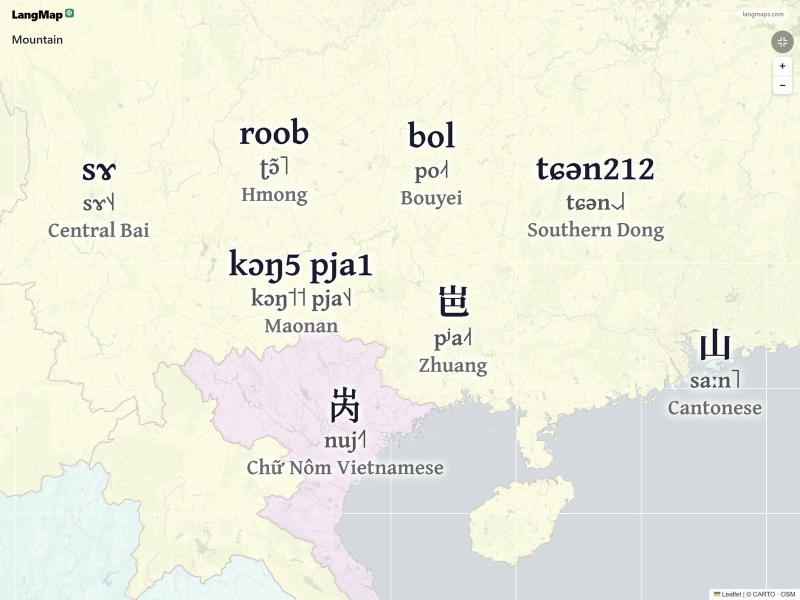

What if English had invented its own Chinese characters?
- Imagine writing man, eat and dog with Chinese-style characters.
- It sounds like a strange experiment.
- But across parts of Asia, languages really did something remarkably similar.

Contents
Imagine English had borrowed Chinese characters
Suppose English speakers had adopted Chinese characters centuries ago.
Sooner or later, they would face a problem:
How do you write an English word that Chinese has no character for?
One answer would be to build one.
Imagine:
man → 僈
亻 suggests "person."
曼 supplies something close to man as a sound clue.
Or:
eat → 嗌
口 suggests "mouth."
益 supplies something close to eat as a sound clue.
Or:
dog → 犢
牛 suggests "animal."
The rest supplies something close to dog as a sound clue.
These are real Chinese characters, but of course they do not actually mean man, eat and dog.
We are only pretending that English borrowed them.
But the method itself is real.
Chinese characters are often built from components with different jobs. One may hint at the meaning, while another hints at the sound.
And in other languages, something very much like this actually happened.
Vietnamese turned Chinese characters into a toolkit
For centuries, Vietnamese could be written with Chữ Nôm.
Take the ordinary Vietnamese word:
núi = mountain
It could be written:
𡶀
Look closely and you can see 山, "mountain," inside it.
The other component helps with the sound.
This was not simply a Chinese word being pronounced in Vietnamese. It was a character used to write the native Vietnamese word núi.
And this was no isolated trick.
Vietnamese writers borrowed Chinese characters for meanings and sounds, and created new characters when they needed them.
Over time, Chữ Nôm became capable of writing Vietnamese poetry, stories, religious works and much more.
Chinese writing was no longer just something to borrow.
It had become something you could build with.
Zhuang speakers did the same
In Guangxi in southern China, the Zhuang speak a Tai-Kadai language related to Thai and Lao.
Their traditional character system is called Sawndip, or 方塊壯字.
A beautiful example is:
岜 (bya) = hill / mountain
Its structure is easy to see.
山 points toward the meaning.
巴 helps with the sound.
It is very close to our imaginary man → 僈.
Except 岜 bya is real.
Sawndip could mix ordinary Chinese characters, characters borrowed for sound or meaning, and locally created forms.
The result looked Chinese.
But it wrote Zhuang.
Bai had its own version
Around Dali in Yunnan, Bai speakers developed 方塊白文 for their own language.
Examples include:
奓 (to⁴²) = big
旵 (tsha⁵⁵) = breakfast
哵 (piɛr⁴⁴) = ask
哽 (kɯ³³) = thick
踞 (ku⁴²) = sit
They look like Chinese characters.
They are writing Bai.
Dong did it too
The Dong, or Kam, live mainly in Guizhou, Hunan and Guangxi and speak another Tai-Kadai language.
They developed 方塊侗文.
哆 (dos) = sing
And a full line might look like this:
伓 咾 村 雷 咾 悶
pu lau sən, pja lau mən
"Father enters the village; thunder enters the sky."
It looks Chinese.
It isn't.
Four languages, four traditions
These traditions developed separately, but they shared a remarkable idea:
Chinese characters were not fixed objects.
They could be borrowed, reassigned, taken apart, recombined and newly created.
And these four are not alone.
Similar Chinese-character-based traditions have also been documented for languages such as Bouyei, Maonan, Miao, Yao and Hani.
Today, these traditional scripts are rarely used, and most of these languages are usually written in Latin-based scripts.
What really spread?
We often say that Chinese characters spread across East and Southeast Asia.
That is true.
But it makes the process sound too passive.
What spread was not just a collection of finished symbols.
People also learned how the system worked.
One component could suggest meaning.
Another could suggest sound.
A familiar character could be given a new job.
And when the character you needed did not exist, you could make one.
There are parallels elsewhere.
Europe adapted the Latin alphabet to many different languages.
Persian and other languages adapted the Arabic script and created letters of their own.
But in the Chinese-character world, adaptation could take a particularly striking form.
You did not just modify the script.
You could manufacture new characters for words Chinese had never needed to write.
So what traveled across the region was not just a collection of Chinese characters.
The blueprint traveled too.